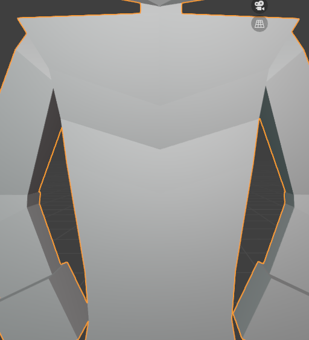
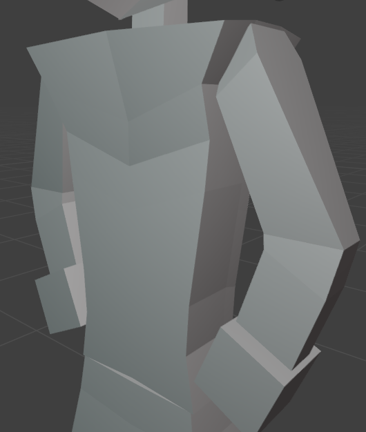
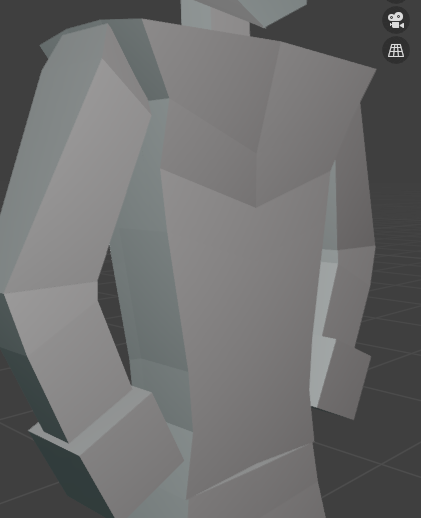
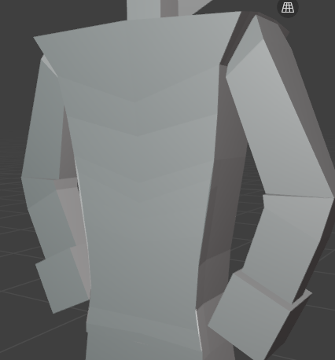
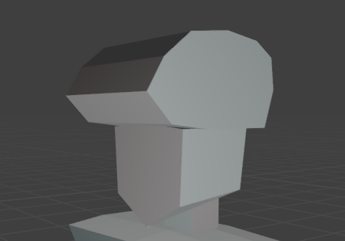

Task 1: Main Body
Development
The torso started off as a cube. Then I cut the cube in half and duplicated the same side for the modelling to happen. I put 3 cuts then I editted the corners or vertices to shapen the torso. Unfortunately, I did not screenshot any of the progress or steps I've taken to create the torso.
I made the waist not too slim not too wide, so it fits with the blocky theme of the character. The lower part contains 2 vertices which allows me to shapen the waist.

Testing
The torso in different angles. It's blocky but not too blocky that it looks like a rectangle.


Feedback
What do you like about the character?
"I like how simplistic and blocky it is."
"I love the hat and very cool body.
What don't you like about the character?
"I don't like how the hat doesn't match with the blocky theme of the rest of the body"
"The shoulder is little bit blocky. Hoever, if it is a style, it's great."
Improvements
The hat was circular in the turn around sheet. So I made it more blocky so it'll fit with the character's theme.

I made the shoulder broader by resizing the vertice that comprises of the shoulder. The shoulders are more broader now compared to the drawing in my turn around sheet.